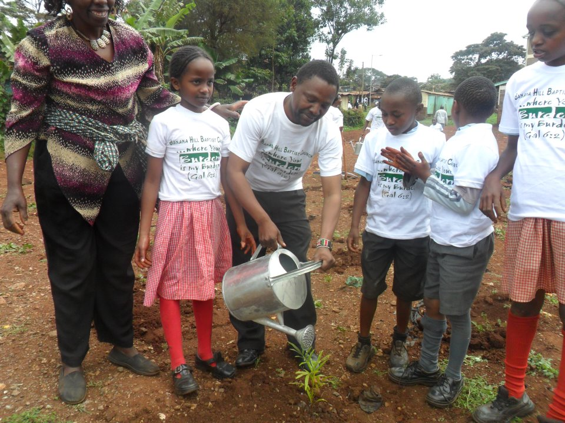

Building safer, inclusive and resilient communities through education, youth empowerment, child protection, mental wellbeing and sustainable community development.

Committed to safe, inclusive, nurturing environments.
CC-BY Licensed Kenyan children in school uniforms, Nakuru County (Wikimedia Commons).
Shankoe Methodist Child and Youth Development Centre (Shankoe CYDC) works directly with vulnerable children, young people, caregivers, and communities to cultivate environments where every child and youth can be safe, supported, and empowered.
By integrating inclusive quality education, practical vocational and entrepreneurial skills, mental wellbeing support, child rights advocacy, and climate resilience, Shankoe CYDC addresses the multifaceted challenges facing young people in rural and pastoralist settings.
Our commitment to children, youth, families, and stakeholders is grounded in six enduring organisational values.
No child or youth is left behind regardless of background, ability, or socioeconomic circumstance.
Transparency, ethical stewardship, and accountability in all actions and stakeholder relationships.
Building confidence, resilience, and practical capability so young people shape their own futures.
Overcoming adversity through proactive adaptability, community innovation, and mutual support.
Promoting equality, human dignity, and fairness for every child, young woman, and young man.
Leveraging collaboration with churches, caregivers, government agencies, and partners for greater impact.
Comprehensive interventions tailored to empower children and young people while reinforcing community support systems.
 Education
Education
Expanding opportunities for children and young people to access inclusive and quality learning, remedial support, and literacy resources.
 Youth Empowerment
Youth Empowerment
Equipping young people with practical vocational skills, employability capacity, financial literacy, and entrepreneurial confidence.
 Wellbeing
Wellbeing
Supporting emotional wellbeing, trauma resilience, safe peer support spaces, and access to respectful psychosocial counseling.
 Safeguarding
Safeguarding
Promoting safe environments where the rights, dignity, physical safety, and developmental wellbeing of children are strictly safeguarded.
 Community Action
Community Action
Building grassroots awareness and encouraging caregivers and community leaders to actively advocate for children’s and youth rights.

SustainabilityStrengthening community awareness, indigenous environmental action, water stewardship, and climate adaptation capacity in Narok County.
Creating sustainable change together with children, young people, caregivers, and communities.
Note for Organisation Review: Verified metrics and statistical milestones from Shankoe CYDC records will replace these placeholders upon official signoff.
Explore Impact FrameworkShankoe CYDC recognizes that lasting child wellbeing is inseparable from strong, supported families. Our programmes actively involve parents, guardians, and local leaders.
Community Mobilisation
Working shoulder-to-shoulder with elders and families.
Shankoe CYDC provides an energetic, aspirational pathway for youth in Narok County to gain employable capabilities, launch micro-enterprises, develop leadership voice, and navigate modern challenges with confidence.
Practical hands-on training tailored to local market demand.
Business incubation, financial literacy, and startup mentorship.
Youth councils, community participation, and civic advocacy.
Critical thinking, peer mentoring, and emotional wellbeing.
How our interventions translate into sustainable, generational transformation across Narok County.
Shankoe CYDC invests in strengthening community child protection and climate resilience systems, expanding education access, empowering young people, and promoting mental wellbeing,
Children and young people in Narok County will grow in safer, inclusive environments with better life outcomes, health, education, and economic security,
Communities will be more accountable, supportive, and capable of sustaining change over the long term.
Authentic experiences of growth, resilience, and hope from the communities we serve.
In accordance with ethical storytelling and child safeguarding principles, individual beneficiary names, quotes, and case studies will be published here once verified by Shankoe CYDC leadership.
Editorial Integrity: Zero Fabricated BeneficiariesReserved for an upcoming profile detailing how a young person in Narok County attained technical skills and launched an enterprise.
View Story Blueprint →Reserved for caregiver perspectives on participating in parenting circles, child safeguarding, and family wellbeing forums.
View Story Blueprint →Reserved for local environmental champions leading tree planting, environmental education, and water resilience projects.
View Story Blueprint →Shankoe CYDC values strategic collaboration with faith-based organisations, civil society, government agencies, academic institutions, and development partners.
Stay informed with community dialogues, training workshops, and centre milestones.
A scheduled gathering focused on child safeguarding, positive parenting, and mental health awareness in the local community.
Hands-on training session equipping out-of-school and vulnerable youth with employable tools and business startup orientation.
Engaging young environmental ambassadors and local schools in native seedling cultivation and watershed protection.